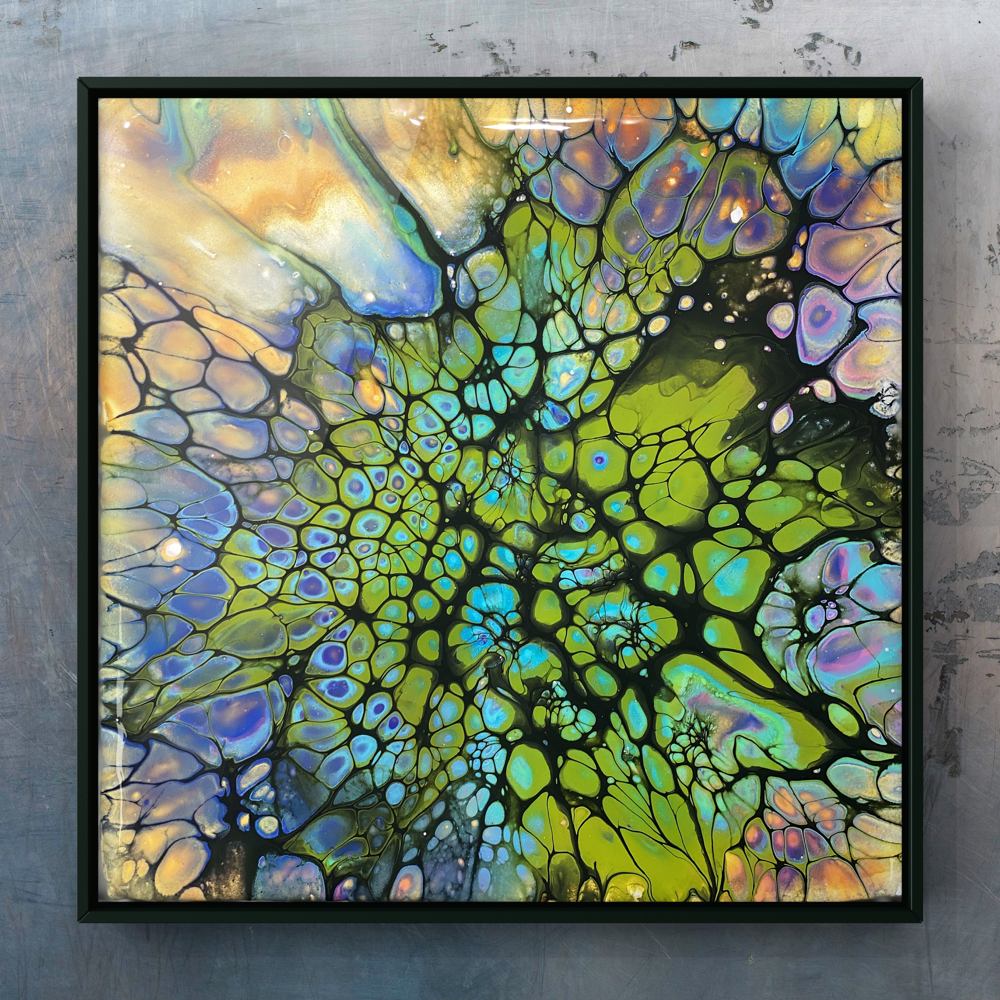
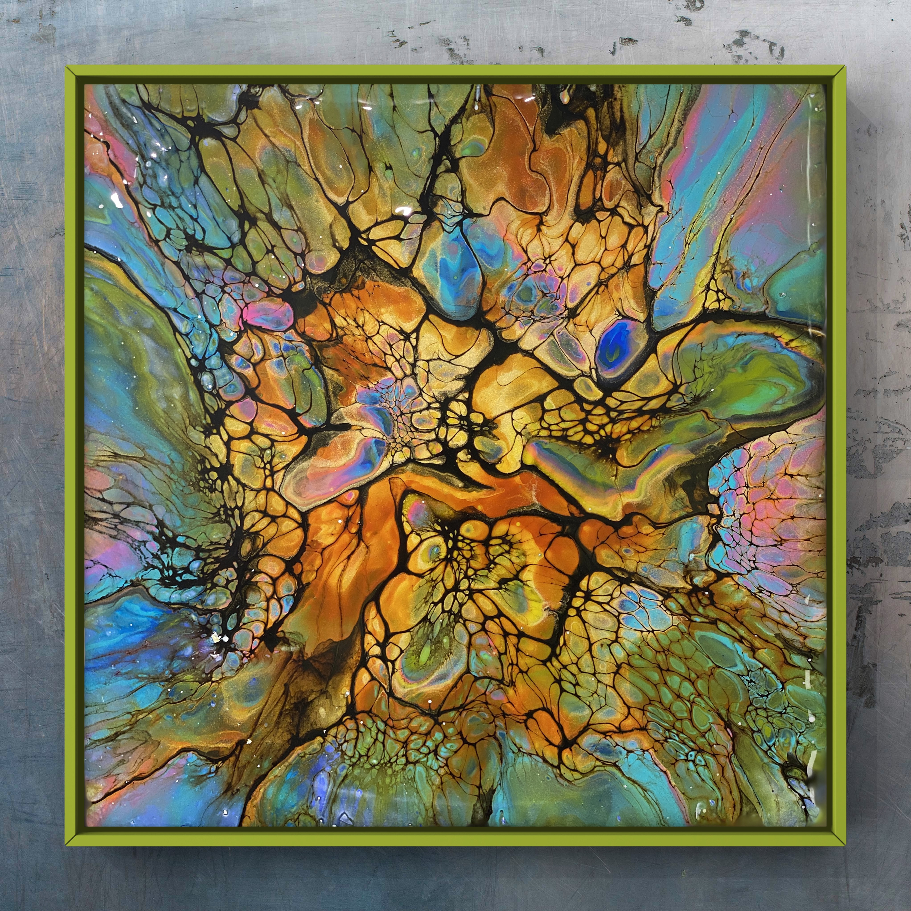
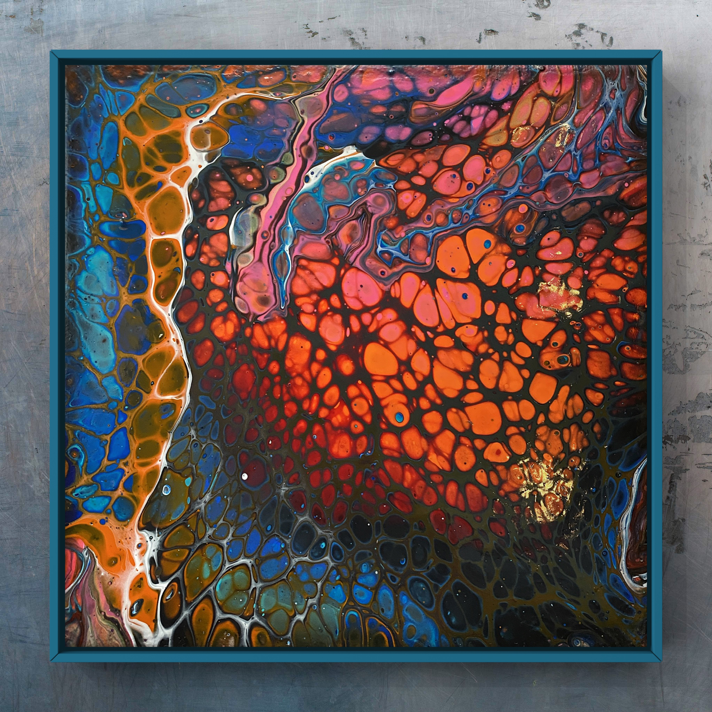
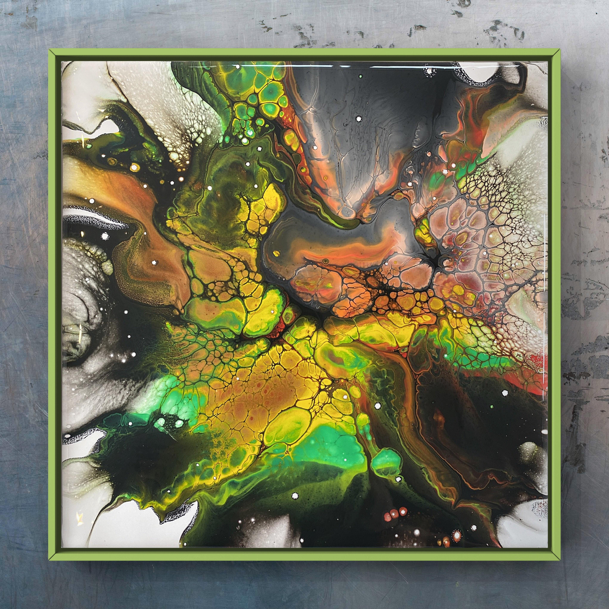
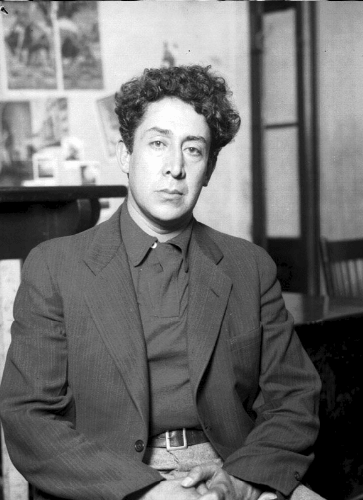
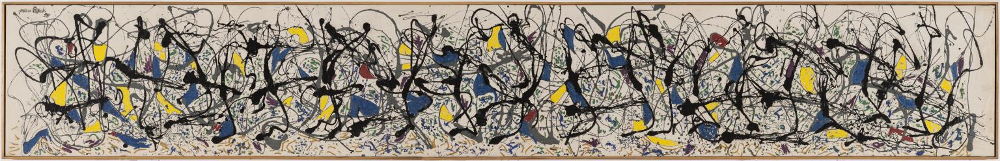

1.1. Acrylic Pouring Intro

Note
Under utvikling!
Dette dokumentet var skrevet i mai 2021 for kursdeltakere som var påmeldt fluidkunst kurset - Acrylic Pouring på tegenskole.no og er under konstruksjon med jevnlig oppdatering.. Si gjerne ifra om alt i fra typoer til hva det måtte være takk!
Daniel Mo Houshmand,
mo@daria.com, mob: \(98079896\)

Vi starter med litt bakgerunnshistorie om hvordan fluidkunst ble til og kort om vitenskapet bak feltet. Videre fortsetter vi med hva Acrylic Pouring er og består av, inkludert ulike typer akrylfarger, hva de forskjellige begrepene betyr som densitet, opasitet, bindemiddel, transportør og Pouring Medium for å nevne noen. Videre hva vi trenger av utstyr og verktøy for å gjennomføre de flotte verkene vi har i sikte.
Deretter skal vi endelig komme igang med de utvalgte teknikkene vi skal gjennomføre ila kurset, nemlig flip-cup. Sist men ikke minst tar vi for oss etterbehandling av maleriene for at de skal bevares så lenge som mulig og ikke miste sine farger eller gulne.
kort om oversettelse
Acrylic Pouring blir direkte oversatt på norsk til «akrylisk helling» eller kanskje «akryl helling» eller «Akrylhelling. Siden det ikke finnes en direkte definert norsk oversettelse så kaller vi det herved for den engelske versjonen med forkortelsen Acrylic Pouring (ACP).
Men først til inspirasjon og en sniktitt på endt resultat av noen malerier jeg har laget, og noen av tenikkene vi skal gå gjennom:




Da jeg først begynte å utforske ACP, ble jeg overrasket over det store antallet metoder og forberedelser folk brukte. Mange kunstnere hadde utviklet sine egne systemer og oppskrifter, med ulike produkter og blandingsforhold. Selv om disse forslagene og anbefalingene sannsynligvis var nyttige, var de overveldende og forvirrende for en nybegynner som meg, som allerede måtte håndtere et vell av nye begreper, teknikker og variasjoner innen hver teknikk.
Jeg skal i hvert fall gjøre mitt aller beste for å vise deg hvordan du også kan lage så fine malerier som du bare vil. Vi skal nøye undersøke hver teknikk vi skal dekke, og jeg vil veilede deg på en måte som gjør at du blir imponert over dine egne prestasjoner.
Du vil bli overrasket over hvor fantastiske malerier du kommer til å skape med litt veiledning fra meg, og kan ta med deg hjem. Videre vil jeg vise deg at det ikke trenger å være komplisert å blande akrylmaling med et Pouring Medium for å forberede deg på ACP.
Vi kommer til å gå gjennom alt det dere trenger å vite, inkludert hvorfor vi trenger å ha noen malinger mere flytende enn andre, hvilke konsistenser som brukes til hvilken teknikker, og vanlige feil å unngå i ACP prosessen.
Contents
1.2. Fluid kunst vs acrylic pouring
Fluidkunst er en abstrakt form for kunst som inkluderer alle kunstformer der prosessen går ut på å helle flytende/fluid maling over på lerret for å lage et unike kunstverk. Noen av de vanligste fluidkunstformene inkluderer alkoholblekk, akrylmaling og epoxy for å nevne noen
Acrylic Pouring ACP er én spesiell form for fluidkunst som er begrenset til akrylmaling blandet med en eller flere tyntflytende medier for å gi malingen ønsket viskositet til en tilhørende teknikk.
Viskositet er et mål på hvor flytende eller viskøs en fluid er. For eksempel så har vann mye lavere viskositet enn honning og samtidig så brukes de til forskjellige formål. Det hadde for eksempel vært litt upassende å drikke et stort glass med honning. Eller å helle vann istedenfor honning i te koppen for å gjøre den søt. På samme vis så er det mere hensikstmessig å bruke en viss viskositet til sin aktuelle teknikk. Viskositet blir også ofte kalt for
konsistensellertykkelsesom vi skal utdype mere kapittel ?.
Tip
Tommelfinger regel Vi ønsker at konsistensen skal være som en oppvarmet honning! Lettrennende, og samtidig kontineuerlig.
1.3. Historie
Noen av mine tidligste flytende malerier var mine favoritter, men jeg var frustrert over at jeg aldri kunne replikere dem, for det meste var de bare lykkelige ulykker! - David Alfaro Siqueiros 1896-1974

På 1930 tallet snubler bokstavelig talt den meksikanske kuntsneren David Alfaro Siqueiros i sitt atelier over noen malespann om igjen renner over på et lerret der det dannes helt spesielle mønstere og formasjoner. Ved et «uhell» så oppdager Siqueiros et helt nytt felt innenfor kunst, nemlig Fluidkunst.
Han ble så fascinert over resulatet og over denne nye teknikken som han ved et uhell had- de oppdaget, og beskrev det som “utilsiktet maleri”. Siqueiros ble umiddelbart så forelsket i estetikken, og beskrev det som et lykkelig ekteskap mellom vitenskap og kunst, kompleksitet og skjønnhet, oppnådd med svært liten innsats.
Hans fascinasjon med dette fenomenet førte ham til å studere vitenskapen om fluidmekanikk og fluid-dynamik. Fluid dynamikk er læren om interaksjon mellom to eller flere fluider, fra
matematikk, mekanikk og fysikk perpektiv.
Denne “utilsiktede” nye kunstformen ble en til stor inspirasjon for kunstverkene til noen av de største kunstnerne i historien som Jackson Pollock, her 5m lange Summertime som en av hans mest kjente verk:

I løpet av de neste tiårene brukte mange kunstnere denne malingsteknikken. Noen kunstnere dykket lenger inn i vitenskapen akkurat som Siqueiros for å få en bedre forståelse av metoden og hva som foregår. I de siste årene harACP eksploderte i popularitet og fortsetter å vokse for hver dag.
1.4. Vitenskap bak fluidkunst
Ulike pigmenter er laget av forskjellige materialer, og hvert av disse materialene har en spesifikk vekt og tetthet. Noen er tyngre,for eksempel metaller, og andre er fra plantemateriale som blomster eller harpiks. Når alle pigmentene blandes med samme væskemedium, slik at pigmentene blir suspendert på samme måte og får interaksjon, så skyver og trekker de forskjellige pigmentene mot hverandre, og noen stiger til toppen og noen synker til bunnen.
Avhengig av viskositet og mengde, beveger de seg rundt, noen ganger blandes, men ofte, hvis de blir igjen for å gjøre sine ting, reiser de seg og synker og skaper celler eller sprengte bobler på lerretet. Hvis du sveiper en tyngre farge, si titanhvit, som er laget med titan, over en lysere (i vekt) farge som gul, vil den gule skyve seg til overflaten mens den hvite synker rundt den.
Svart maling har for eksempel en tendens til å være mindre tett enn hvit maling. Det å helle hvit maling på svart maling ville føre til ønsket blanding. Svart på hvitt ville imidlertid ikke.I fysikk kalles denne kampen mellom tettheter en Rayleigh-Taylor ustabilitet, som kan ses i en kort klipp Siqueiros uhell. Denne ustabiliteten er gjeldende i en rekke områder utenfor kunsten. I astrofysikk eksploderende stjerner for eksempel gasser med varierende tetthet, noe som fører til dannelsen av Rayleigh-Taylor “fingre” og formasjon:

Ingeniører stoler også på denne ustabiliteten når de graver etter olje. Selv om denne ustabiliteten får malingen til å blandes sammen, hjelper andre fysiske prosesser med å bestemme hvordan maleriet vil se ut. Viskositet - eller “tykkelsen” av en væske bestemmer delvis hvor langt malingen vil spre seg før tørking.
Når man forstår vitenskapen bak disse viskøse maskingene eller celler, så gir det oss mye mer kontroll over arbeid som en gang tilsynelatende bare var tilfeldig. Du kan enkelt google materialene og vektene til bestemte pigmenter i malingen og deretter velge farger for å blande og sveipe som du vet vil stige eller synke. Men det er alltid litt mysterium om hvordan det siste stykket ditt vil se ut, og det er en del av gleden ved denne kunstfomen, men å ha en forståelse av vitenskapen i pigmentene kan virkelig åpne opp for flere dører for moro og eksperimentering i arbeidet vårt.
1.5. Akrylmaling og tilbehør
Det er utallig med akrylfarger å velge mellom i grader av pigmentert, kvalitet, konsistens, lysfasthet, densitet dvs tetthet og eller tyngde, gjennommsiktighet osv. Vannbasert akrylmaling består av pigment- partikler dispergert i en akrylpolymeremulsjon. Det er tre hovedkomponenter i akrylmaling - pigment, bindemiddel og transportør som vann. I dette kapittelet skal vi gå gjennom de forskjellige egenskapene til akrylfarger og pouring medium.
1.5.1. Typer av akrylmaling
Akrylmaling kommer i fire hovedategorier: tung, myk, flytende, høytflytende og i tillegg pigmenter og håndverksmaling (Amsterdam Expert). Hver av malingstypene kan kreve en liten endring i anbefalte oppskrifter.
1.5.1.1. Heavy body
Heavy bodyer mer som kald honning eller tannkremDe beholder formen når de tas ut av beholderen og flater ikke ut mye
Disse malingstypene er vanligvis høyere pigmentert (mengden pig- ment per del)
Når man bruker tunge akrylfarger, vil sannsynligvis øke forholdet mellom farge og POM
1.5.1.2. Soft body
De fleste malinger som kommer i metall eller plastrør eller større beholdere, vil være myke akrylfarger. * Noen ganger blir disse referert til som medium kropp akryl.
Disse ser ut som varm honning når man klemmr den ut av ut av beholderen.
1.5.1.3. High-Flow
High-Flow akryler spesielt laget for å være mere rennende enn myke eller tunge. High flow er er designet for å flyte og spre seg lett uten å ofre fargeintensitetDenne formen er ideell for helle eller dryppe teknikker, i stedet for å bruke den med en pensel
Det finnes to hovedtyper av High-Flow:
De som er høyt pigmenterte fra høykvalitetsmerker som Liquitex og Golden
Og det er de budsjettfluid akrylfargene som er myke kroppsmaling med mer vann tilført
De dyrere High-Flow akrylfargene kan blandes med et veldig høyt PM til malingsforhold, generelt
4:1eller merBilligere High-Flow akrylene, som Artist’s Loft, bør holdes på forholdet
2:1
1.5.1.4. Hobby
hobbymaling er generelt en billigere versjon av akrylmaling som
ikke er veldig pigmentert i det hele tatt.
1.5.1.5. Pigmenter
Pigmenter er granulære faste stoffer som gir maling fargen. De males eller kvernes til en liten partikkelstørrelse og oppløses ikke, men forblir suspendert i malingen. Pigmenter kan være organiske, uorganiske, naturlige og syntetiske. De har liten eller ingen affinitet for overflaten de påføres på.
1.5.2. Bindemiddel
Binder på engelsk eller et bindemiddel på norsk er det stoffet som holder pigmentet på plass etter at malingen tørker. Akrylmaling har akrylpolymer som bindemiddel, og dette danner et hinne etter at vannet har fordampet. Bindemiddelet kan tenkes som det som holder alle komponenter sammen som vann og farger.
1.5.3. Transportør
Transportøren er den delen av malingen som bærer pigmenter og bindemiddelelet. Vann er er for eksempel transportør for vannbasert akryl, og når det kombineres med bindemidlet, skaper det en polymeremulsjon. Når vannet forlater systemet via fordampning eller absorpsjon, tørker malingen og skaper en stabil klar polymer-film eller tynt lagg full av fangede fargede pigmentpartikler
1.5.4. Graden av gjennomsiktighet/transparanthet
Når man kjøper akrylmaling så står det på etiketten til de aller fleste merker om fargen er transparant, semi transparant eller heldekkende. Med en heldekkende maling klarer ikke lyset trenge gjennom det øverste laget med maling, så underlaget og papiret forblir skjult og tapt for øyet. Effekten er en flatere, mer matt farge. Ettersom dekkende farger er tettere, så er det også større risiko for å bli gjørmete i fargen når den blandes. På den andre siden så glir lys lett gjennom tranparante farger og de underliggende fargene blir lettere synlig. Derfor er det viktig å tenke på rekkefølger på farger når man skal legge lag av farger oppå hverandre.
1.5.4.1. Lysfasthet
Hvor lysfast en akrylfarge er står også på etiketten. Lysfastheten til et fargestoff som pigment beskriver hvor motstandsdyktig fargen er mot blekning eller falming når det utsettes for lys.
1.6. Pouring Medium
Pouring Medium er helt sentralt i Acrylic Pouring. Det finnes så utrolig mange pouring mediums å velge mellom, både gjennom produsenter med fedrig mixet og klar for bruk, og også utallige måter å lage en hjemmelaget pouring medium på til en mye lavere pris. I begynnelsen anbefaler jeg likevel å bruke ferdig blandet for å redusere sjansene for å få uønskede effekter og artifakter i kunstverket. Pouring Medium er rett og slett et flytende tilsetningsstoff som du bruker for å utvide malingen og for å endre konsistensen uten å ofre bindesegenskaper (tenk tørket plast). Tre av de billigste og enkleste PM er:
Vann og kun vann: Noen av verden flinkeste i sitt felt som for eksempel i Dutch Pour som vi skal prøve å i uke 3, sverger kun til vann og akryl og ingenting annet. Hun får helt fantastiske resultater med kun vann.
PVA lim og vann: i ration 60:40 er også en veldig populær og alsidig Pouring Medium. I tillegg er det veldig mye penger å spare me denne teknikken. Limet kommer i flytende hvitt form, men tørker klart. Det er også veldig klebrig og sterk når den tørkes
Floetrol og vann: Floetrol er noe man vanligvis kjøper i vanlige maleforetninger, typ når man skal farge veggene sine eller paneler. Floetrol blandes tra- disjonelt i veggmaling slik at malingen blir mere flytende og tørker saktere og dermed mindre sjanse for at maleriet sprekker opp. En av hovedgrunnen til at kunstverker blir oppsprukket er pga at forskjeelli- ge farger og fargeblandinger tørker i forskjellige hastigheter. Så man ønsker at fargene tørker ca i samme hastighet.
1.7. Nødvendig utstyr
En av de første tingene du trenger i din verktøyskasse er akrylmaling som vi gikk gjennom i kapittel ?. Akrylmaling er tilgjengelig i forskjellige farger fra dusinvis av merker og priser som varierer fra rimelige til dyre. Du kan finne flotte sett med akrylmaling som et utgangspunkt.
1.7.1. Premixed akrylfarger
Alternativt kan du også kjøpe akrylmaling som er laget bare for ??. Disse er ferdigblandet med et hellemedium for enkelhets skyld.
1.7.2. Pouring medium (PM)
Et PM er et produkt som ble utviklet for å blande akrylmaling med noe egnet til en mere flytende konsistens, ønsket glans osv.
1.7.3. Valg av base lerret eller trepanel.
Vanligvis, med ?? så vil basen være trepanel eller lerret. Dette er to overflater som holder mediumet godt, og de vil begge gi gode resultater. Valget av base faller på hvilken preferanser man har. Du kan også bli kreativ og bruke andre medier som keramiske fliser, glass, stein eller plast!
1.7.4. Beskyttelsesutstyr
1.7.4.1. Personlig
Du vil være sikker på at du tar noen tiltak for å beskytte deg selv når du jobber. Hansker er veldig fornuftig å ha for aktiviteter som dette. Det kan også være lurt å bruke klær som du ikke har noe imot å få maling på. Eller forkle.
1.7.4.2. Maleområdet
For beskyttelse inventar så vil du dekke arbeidsområdet. Dekke gulvet rundt med for eksempel plast, presenning eller til og med papir.
1.7.5. kopper
Med mindre du heller rett fra flasken, bruk plastkopper til å blande akrylmaling med POM. Kopper kan også brukes til å blande flere farger sammen. Billige plastkopper er helt greie å bruke i dette tilfellet.
1.7.6. silikonolje
Silikonolje er ikke nødvendig, men er noe som kan brukes til å lage små celler i kunstverket ditt, som bildet som vises her. Du vil se disse små cellene på lerretet med bare noen få dråper i malingsblandingen. Prøv denne flasken silikonolje i hellemaleriene! Unngå å blande oljen for mye i blandingen. Du vil at oljen skal forbli segregert i malings- blandingen for å skape cellene.
1.7.7. Tapen
er til å tape på undersiden av lerret for at det skal se pent ut etter at kunstverket har tørket. Hvis ikke man taper så vil det renne og dryppe veldig mye på undersiden av maleriet som ikke er så pent, og spesielt når man skal selge det. Ellers er det strengt tatt ikke nødvendig, men en billig rutine som hever standarden og totale inntrykket på verket.
1.7.8. Tegnestifter
Tegnestifter eller kartnål eller til og med kopper av samme type brukes til å løfte opp lerret fra bordet slik at man kan justere eventuelle skjev- heter ga skjevt underlag. Detter bruker man vater til for å kontrolere. Et annet viktig funksjon det å øfte lerret er at når malingen har tørket så vil den ikke sitte fast på underlaget.
1.7.9. Torch
For celledannelse.
1.7.10. Vaskemidler
For rengjøring både før underveis og etter at man er ferdig.
1.8. Konsistens
Konsistens er nesten synonymt med viskositet som vi såvidt var innom i paragraf 1.1. Konsistensene av de ferdig blandede fargene er uten tvil den viktigste delen i ACPforberedelsen. Å ha riktig konsistens til den ønskede teknikken har enorm stor innvirkning på hvordan malingene vil reagere med hverandre og dermed sluttresultatet, og det er en av de få tingene du virkelig kan kontrollere med akrylmaling. Tabell 5.1 viser hvordan konsistens vi ønsker å oppnå til de 4 forskjellige teknikkene vi skal De første gangene man begyn- ner medACP, og også alle andre ganger så anbefales det på det sterkeste å prøve å oppnå sam- me konsistens på tvers av alle fargene. Dette vil gi deg et ut- merket utgangspunkt til å forstå hvordan endring av konsistensen påvirker utfallet av kunstverket ditt.
1.8.1. Hvordan måle konsistens?
Det er flere måter å måle konsistensen av flytende akrylmaling på. Vi går gjennom de tre enkleste. Erfarne kunstnere innen faget vil si at de kan føle den riktig konsistens imens de rører. Når det er sagt og kostbare materialer brukes til for eksempel bestilt maleri eller verk til utstilling så anbefales det at man kontrollerer konsistensen helt uavhengig av erfaringsnivå ved å benytte en eller flere av kommende metoder.
Følgende tabell angir et ca hvilken teknikk og konsistens som egner sammen der og viskositet eller konsistens går fra skala 1 prikk • er veldig tynt, så tynt at hvis det blir noe tynnnere så rissikererer vi at pigmenter brytes, og ••••• er så tykk at det minste mere så vil ikke honningen falle fra skjeen.
Teknikk |
Visositet (\(\nu\) • - •••••) |
|---|---|
Flip-cup |
•• - •••• |
Dutch-pour |
• - •• |
Swipe |
1.8.1.1. Digitalvekt
Kommer…
1.8.1.2. Drip-metoden
Den aller vanligste metoden er å dyppe rørepinnen i malingen og trekke den ut vertikalt opp slik at malingen renner tilbake i koppen.
For høy og malingen vil synke på grunn av økt høyde og for lav vil føre til at malingen lager en stalagmitt / stalaktitt direkte fra pinnen.
La malingen renne tilbake i koppen og se hvordan formasjon den får med overflaten maling.
Vi ønsker å oppnå at malingen som drypper av rørepinnen skal danne en liten spor som skal forsvinne umiddelbart.
Den haugen skal ikke vare i mer enn et sekund eller to før den synker og blir en del av malingen igjen.
Hvis malingen er tykkere, vil formasjonene skape flere formasjoner over seg selv, som en softiskrem, og forsvinner deretter gradvis på 3 eller 4 sekunder.
Hvis malingen er for tynn, så vil den renne av rørepinnen synke under maling, eller umiddelbart integreres med overflaten uten å lage en struktur i høyden.
1.8.1.3. Papir kappløp metoden
Denne metoden går ut på å legge en liten mengde, ca en liten teskje av farge på toppen av et A4 ark som fig ? initielt i ro som på a og dretter løfte det skrått eller vertikalt for å se hvilken av fargene som kommer raskest ned som 5.1c. Vi kan deretter modifisere de andre fargene og ta en ny test for få de til å renne ca på samma ønsket vis.
1.9. Teknikker
For konsistens til tilhørende teknikk se forrige kapittel
1.9.1. Flip-cup
Målet er å få koppen med maling snudd opp ned på lerret, lar den hvile noen minutter for å få malingene til å synkes og deretter løftes opp og torches. .
Alle farger er blandet separat, sammen med PM, og et par dråper med vann om nødvendig.
Forholdet kan være
1:2,1:1. For bedre celledannelse kan to til tre dråper silikonolje tilsettes per farge.Fargeblandingene blir deretter stablet oppå hverandre i en be- holder.
Beholderen plasseres vertikalt på lerret.
Koppen løftes deretter forsiktig opp og lar hvile noen monutter
Hvisflerecellerønskes,kanentorchellervarmluftstørkerbrukes til å viftes kort over fmalingen. Lerret gynges frem og tilbake til malingen har spredt seg over malingsområdet og resultatet tilsvarer ideene.
1.9.2. Ring pour
Med Ring Pour eller Swirl Pouring påføres malingen nøye på lerretet med sirkulære bevegelser, og skaper et mønster som ligner på et års årringer.
Hver farge blandes hver for seg, sammen med hellemedietog vann. Forhold ca 1:1
Disse blir deretter stablet oppå hverandre i en kopp
Innholdet i koppen helles nå veldig sakte på midten av lerret. Veldig små sirkulær bevegelse må utføres for å oppnå vekstringer i treet
Lerrett vippes deretter frem og tilbake til “Tree Ring” har spredt seg over malingsområdet og resultatet tilsvarer ideene.
1.9.3. Swipe
ACP Sveip teknikken kan brukes alene eller sammen med andre flytende malingsteknikker. Sveipteknikken ønsker man å gjøre cellene godt synlige eller for å oppnå flytende mønstre. For å gjøre dette, så swiper man av den påførte siste laget med maling med en slikkepott, plastikk, tørkepair eller en fuktig klut. Mye som kan brukes.
For å swipe over fargene, trenger vi passende hjelpemidler. Disse kan for eksempel være alettkniver eller spatler, men også papirhåndkle. Fargene (ikke glem silikon) kan bli påført på veldig mange forskjellige måter. I tillegg påføres en blandet maling uten silikon ved siden av. Med et passende verktøy blir den fargen s
1.9.4. Dutch pour (AirSwipe)
i motsetning til den vanlige sveipteknikken, påføres ikke malingen med noen utsty, men ved hjelp av luft, for eksempel en hårføner. Dette gir de mest interessante, ville og spektakulære mønstrene, som minner om røyk i overgangen til å forsvinne.
Fargene er blandet tynt i hver sin kopp.
Denne teknikken krever en base av en farge dekket tynt over hele lerret slik at fargene kan flyte lettere.
Fargene inkludert basefargen skal blandes tynt.
Deretter heller man farger der man selv ønsker enten over hver- andre eller i striper over hverandre..
Nå helles basefargen rundt der man har helt hovedfargene, også blåser forsiktig med hårføner basefargene over slik at de dekker fargene helt.
Til slutt blåser man med hårføner over alle fargene for å spre det rundt.